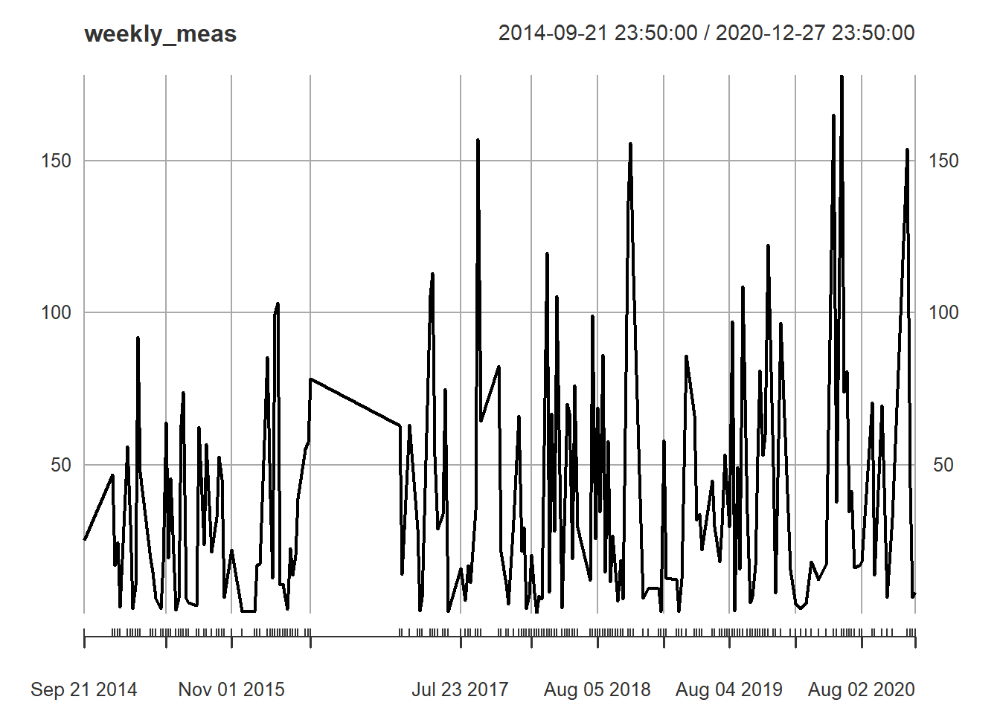
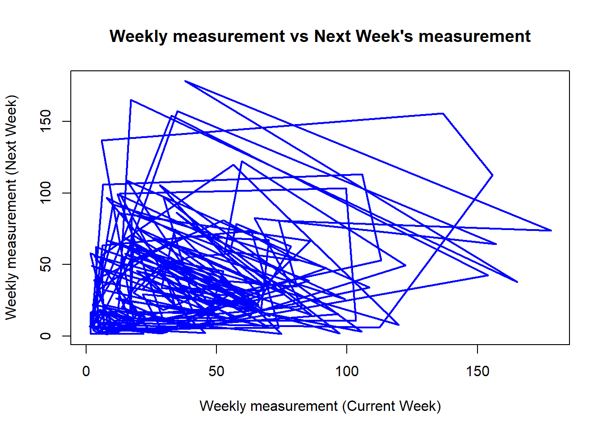

rm(list = ls())
dev.off()null device
1 help.start()starting httpd help server ... doneIf nothing happens, you should open
'http://127.0.0.1:24018/doc/html/index.html' yourselfThese lines clear variables, plots and help pages:
rm(list = ls())
dev.off()null device
1 help.start()starting httpd help server ... doneIf nothing happens, you should open
'http://127.0.0.1:24018/doc/html/index.html' yourselfWe first need to get the appropriate library ready. Remember to precede every line with the install.packages command.
library("astsa")Warning: package 'astsa' was built under R version 4.4.2library("xts")Warning: package 'xts' was built under R version 4.4.2Loading required package: zooWarning: package 'zoo' was built under R version 4.4.2
Attaching package: 'zoo'The following objects are masked from 'package:base':
as.Date, as.Date.numericlibrary("readr")Warning: package 'readr' was built under R version 4.4.2library("lubridate")Warning: package 'lubridate' was built under R version 4.4.2
Attaching package: 'lubridate'The following objects are masked from 'package:base':
date, intersect, setdiff, unionlibrary("dplyr")Warning: package 'dplyr' was built under R version 4.4.2
######################### Warning from 'xts' package ##########################
# #
# The dplyr lag() function breaks how base R's lag() function is supposed to #
# work, which breaks lag(my_xts). Calls to lag(my_xts) that you type or #
# source() into this session won't work correctly. #
# #
# Use stats::lag() to make sure you're not using dplyr::lag(), or you can add #
# conflictRules('dplyr', exclude = 'lag') to your .Rprofile to stop #
# dplyr from breaking base R's lag() function. #
# #
# Code in packages is not affected. It's protected by R's namespace mechanism #
# Set `options(xts.warn_dplyr_breaks_lag = FALSE)` to suppress this warning. #
# #
###############################################################################
Attaching package: 'dplyr'The following objects are masked from 'package:xts':
first, lastThe following objects are masked from 'package:stats':
filter, lagThe following objects are masked from 'package:base':
intersect, setdiff, setequal, unionWe’re going to extract the data from Arpa Lombardia.
setwd("C:/Users/39349/OneDrive/Desktop/Projects/Su-git-hub/rain-chaos")
getwd()[1] "C:/Users/39349/OneDrive/Desktop/Projects/Su-git-hub/rain-chaos"df <- read.csv("Precipitazioni_dal_2011_al_2020_20250215.csv", header = TRUE)This data frame contains rain precipitation measurements from 2014-07-18 to 2021-01-01, done by a single station every 10 minutes. We only care about "Data" and "Valore", thus:
df <- df[, c("Data", "Valore")]Let’s first focus on converting the dates into a proper format, instead of just strings.
df$Data <- dmy_hms(df$Data)It’s easy to see that this data frame is not sorted date-wise, so we immediately fix that for time series plotting.
is.unsorted(df$Data) # returns true[1] TRUEdf <- df[order(df$Data), ] # reorders the dataThe station had some periods of time in which it was not collecting any data, so we don’t have the correct number of measurements, let’s fix that.
expected_times <- seq(from = min(df$Data), to = max(df$Data), by = "10 min")
missing_times <- setdiff(expected_times, df$Data)
# Check if there are missing timestamps
if (length(missing_times) > 0) {
cat("There are", length(missing_times), "missing timestamps.\n")
} else {
cat("No missing timestamps!\n")
}There are 41453 missing timestamps.# This inserts the missing times in the right order
df <- data.frame(Data = expected_times) %>% left_join(df, by = "Data")
# We get rid of the first measurement (I don't remember why I did that).
df <- df[df$Data >= "2014-07-19 00:00:00", ]Now we can set up the time series
xts_data <- xts(df$Valore, order.by = df$Data)
# This gets rid of faulty measurements. This could've been done earlier to be fair
xts_data[xts_data < 0] <- NAFor some reason (I don’t remember) we take the sum of weekly measurements.
weekly_meas <- apply.weekly(xts_data, sum)
weekly_meas <- weekly_meas[weekly_meas > 1] # Why are we only considering weekly measurements > 1?
summary(weekly_meas) # this reveals the quantiles Index weekly_meas
Min. :2014-09-21 23:50:00.00 Min. : 1.20
1st Qu.:2016-03-26 05:50:00.00 1st Qu.: 10.75
Median :2018-03-22 11:50:00.00 Median : 25.50
Mean :2017-12-30 02:10:52.17 Mean : 38.69
3rd Qu.:2019-07-16 17:50:00.00 3rd Qu.: 57.85
Max. :2020-12-27 23:50:00.00 Max. :178.20 plot(weekly_meas)
tau <- 1
weekly_meas_shifted <- lag.xts(weekly_meas, k = -1)
plot(as.numeric(weekly_meas), as.numeric(weekly_meas_shifted),
xlab = "Weekly measurement (Current Week)", ylab = "Weekly measurement (Next Week)",
main = "Weekly measurement vs Next Week's measurement", type = "l", col = "blue",
lty = 1, lwd = 2)